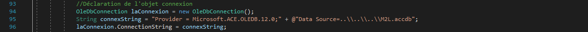

Mes projets
Créée et installée en 2003 à Nancy, la Maison des Ligues de Lorraine (M2L) a pour mission d’apporter aux différentes ligues sportives régionales et à d’autres structures hébergées des espaces et des services dédiés aux sports. Elle héberge la majorité du mouvement sportif Lorrain, qui représente près de 6 500 clubs, plus de 525 000 licenciés et environ 50 000 bénévoles. Son financement est géré par le Conseil Régional de Lorraine et son administration est déléguée Comité Régional Olympique et Sportif de Lorraine (CROSL). La M2L organise chaque année, en septembre, la Journée des Portes Ouvertes (JPO) des associations sportives. C’est une manifestation qui permet de faire découvrir des sports variés au grand public afin de leur permettre de faire un choix. Cela permet également aux différents clubs d’informer sur leurs horaires et leurs infrastructures ainsi que de d’enregistrer les inscriptions éventuelles de nouveaux adhérents. La M2L s’occupe de l’ensemble de l’organisation de cette journée, et a ainsi besoin de connaître les ligues qui y participent ainsi que leurs membres, et procède donc à leur inscription. Elle désire pour cela s’équiper d’une application (M2L_JPO) qui l’assiste dans cette organisation.
Ce PPE était un travail à effectuer par équipes de deux. L’application développée lors cette situation professionnelle a donc été séparée en deux parties : la gestion des ligues, et la gestion des membres. Mon binôme s’est chargé de la partie « gestion des ligues », et je me suis occupé de la partie « gestion des membres ».
Conception du document de suivi du travail de groupe :
L’objectif est d’établir un planning en fonction des tâches demandées et du déroulement du projet, et également d’informer des activités que l’on a réalisé. Dans ce PPE, mon binôme et moi-même avons planifié nos tâches via une répartition afin de mieux coordonner nos différents travaux et ainsi effectuer la mise en commun plus rapidement.
Définition de la charte graphique et de la maquette des interfaces :
Cette activité encadre la définition des différents éléments de l’interface utilisateur de l’application, notamment avec le maquettage de ces éléments, et cette conception doit être effectuée en coopération avec des utilisateurs (dans le cas de ce PPE, le professeur qui évalue le projet). Nous avons donc fait la maquette des interfaces correspondant à l’application que nous devions développer.
Création de la base de données :
Nous avons créé la base de données via le logiciel Access et avons suivi un modèle relationnel donné en annexe pour la conception. Tout comme la charte graphique, cette base de données a d’abord dû être validée par le professeur référent du PPE avant de passer à l’étape suivante.
Création commune de l’interface graphique de l’application :
Avant de créer le code de l’application selon nos parties respectives, nous avons d’abord crée un projet Windows Forms sur Visual Studio, puis crée l’interface graphique de l’application selon la charte graphique et la maquette des interfaces réalisées précédemment, afin d’avoir une base commune pour faciliter la mise en commun à la fin du PPE.
Développement des fonctionnalités de l’application (travaux individuels) :
Cette application est codée en langage C# via l’environnement de développement Visual Studio. L’objectif est de lier chaque partie de l’interface graphique (boutons, listes, boîtes de texte…) avec le code qui lui correspond. Par exemple, le bouton « Modifier » de la partie membre, une fois cliqué, devra donner l’accès à l’écriture aux boîtes de texte « nom membre », « prénom membre », « mail du membre » …, et donnera l’accès à un bouton « Enregistrer » qui aura lui aussi son propre code, qui sera d’ailleurs en lien avec la base de données (avec l’envoi de requêtes INSERT ou UPDATE), préalablement paramétré dans le code de l’application. Nous testons ensuite individuellement notre partie de l’application afin de vérifier que tout fonctionne correctement.
Mise en commun, harmonisation et livraison :
Une fois le travail individuel terminé, nous avons mis en commun nos deux parties, en corrigeant les éventuelles incohérences entre chaque partie, puis nous avons effectué un test global puis corrigé les erreurs qui sont survenues.
Il ne nous restait plus qu’à livrer notre travail mis en commun dans le dossier de rendu final sur le serveur du lycée.
Modèle relationnel de la base de données :
Connexion à la base de données :
Utilisation de la base de données :
Requêtes SELECT
Requête INSERT
Requête UPDATE
Requête DELETE
Activation / Désactivation d'éléments de l'application, en fonction de nos besoins :
Ajout des données dans les éléments de l'application (ici une ComboBox) :
Structure de l'application :
L'appication en éxécution :
A1.1.1 Analyse du cahier des charges d’un service à produire
A1.4.1 Participation à un projet
A1.4.2 Évaluation des indicateurs de suivi d’un projet et justification des écarts
A4.1.2 Conception ou adaptation de l’interface utilisateur d’une solution applicative
A4.1.3 Conception ou adaptation d’une base de données
A4.1.7 Développement, utilisation ou adaptation de composants logiciels
A4.1.8 Réalisation des tests nécessaires à la validation d’éléments adaptés ou développés
A4.2.1 Analyse et correction d’un dysfonctionnement, d’un problème de qualité de service ou de sécurité
Présentation de l’arborescence :
→ Application (contient l’application développée en C# avec Visual Studio)
→ Base de données (contient le fichier de la BDD en format Access)
→ Charte graphique (contient le fichier PDF de la charte graphique)